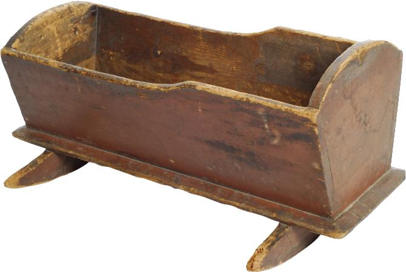
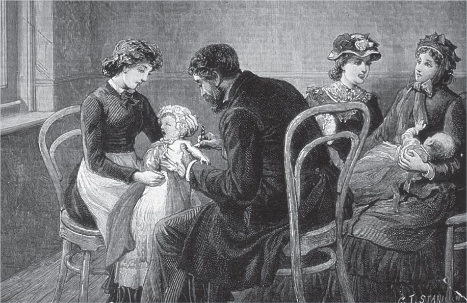
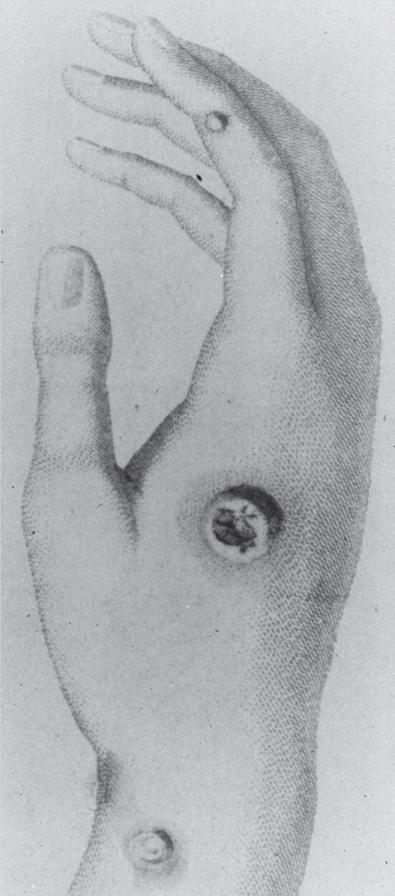
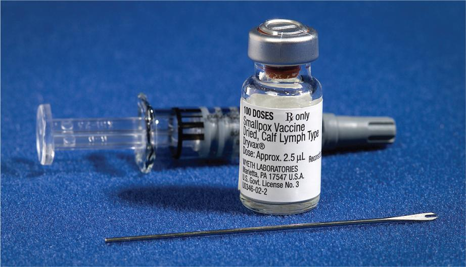
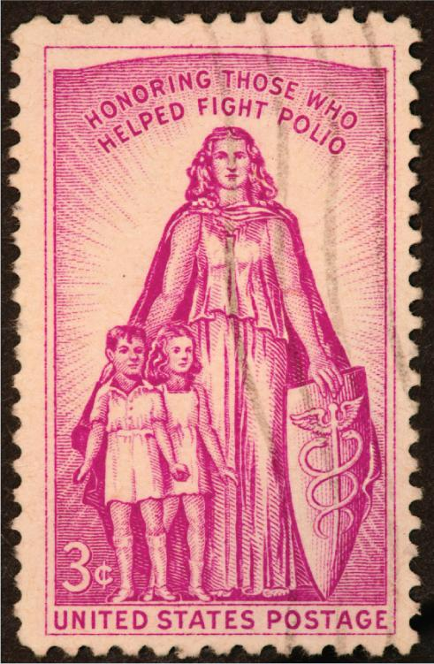
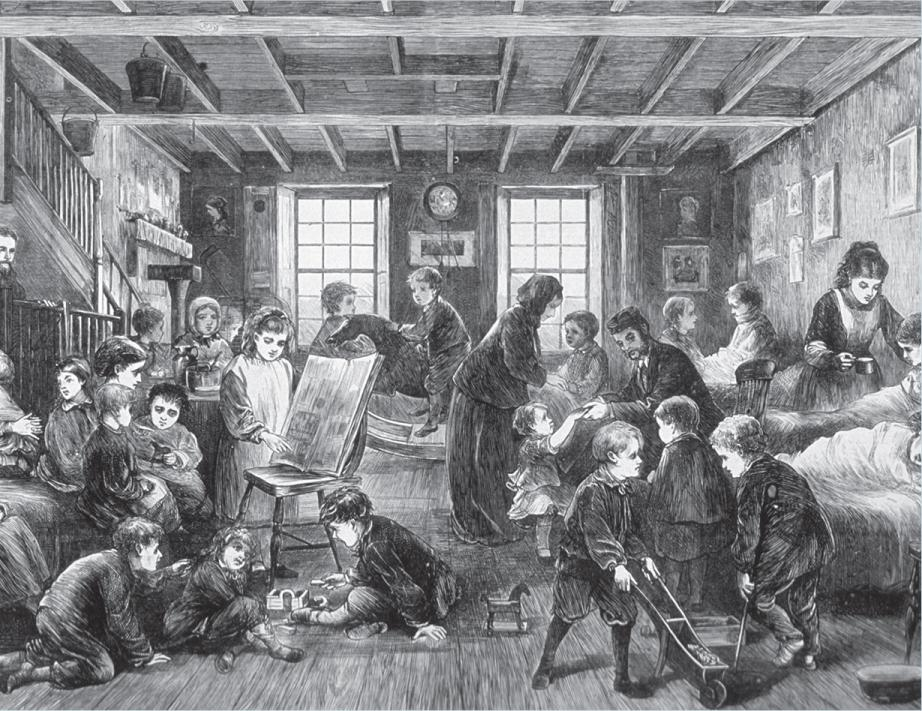
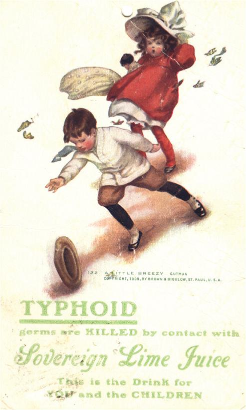
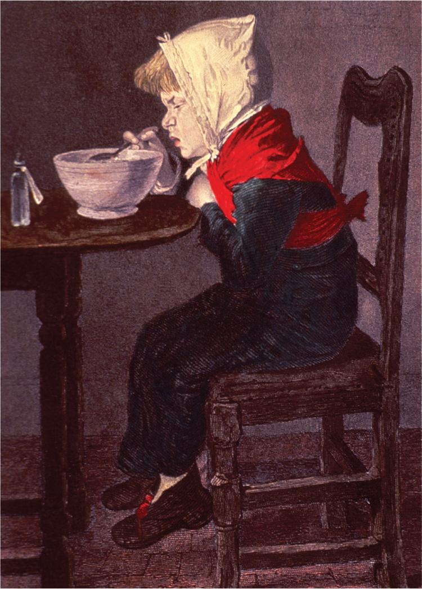
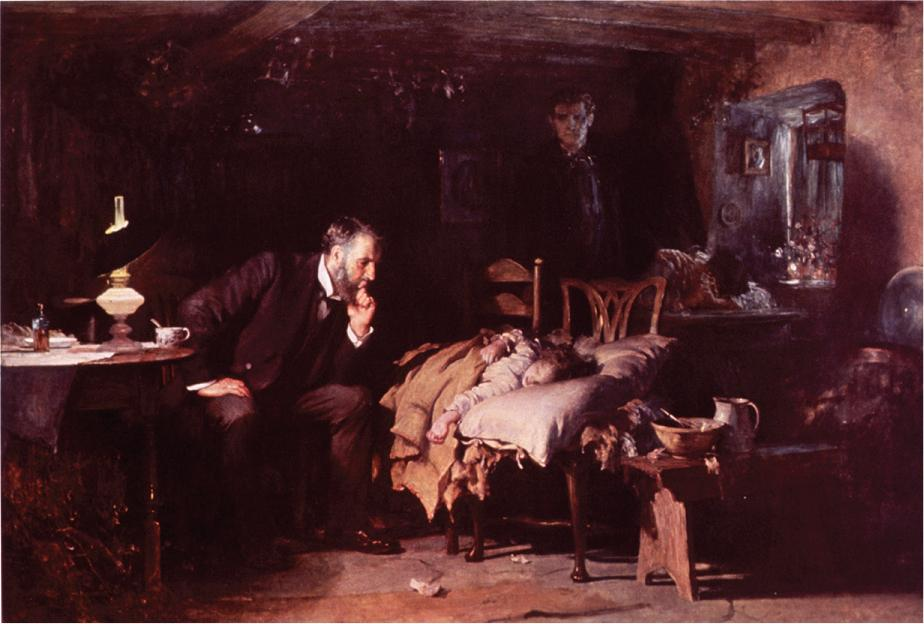
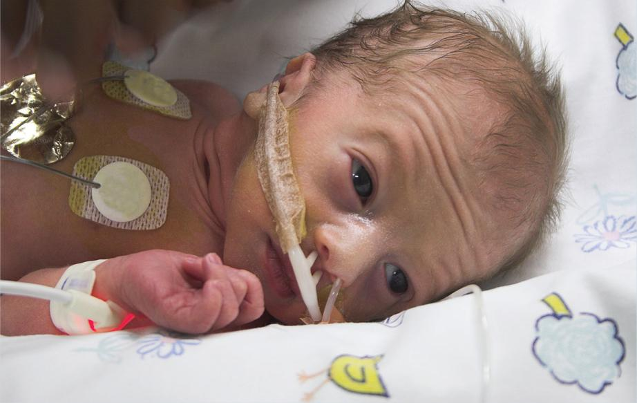

14.1 Historical Introduction
Throughout history, the care and treatment of children, known as pediatrics, has rested primarily with family members. For more serious illnesses that affected children, family caregivers sought help from shamans, herbalists, and respected maternal figures whose healing practices were well known in the community. With little knowledge of pediatric anatomy and physiology, these untrained practitioners could sometimes do little for this vulnerable patient population, which led to widespread mortality among children. Chronically ill children were often abandoned in church sanctuaries and left in the care of religious advisors.
As knowledge of human anatomy increased, recognition of many childhood conditions became evident in ancient records. Included in these records is the Ebers Papyrus (1500 bce), which discusses treatment for diseases of the eye as well as a cure for intestinal worms; writings from the Greek physician Hippocrates, which present treatments for diarrhea, asthma, and mumps, as well as the care of children’s teeth; and documents from the Greek practitioner Galen, which detail treatments for pneumonia and rickets.

However, it was not until the 1st century that the first book dedicated solely to the treatment of children, The Diseases of Children, was recorded. Written by Persian pharmacist and physician Abu Bakr Muhammad ibn Zakariya al-Razi (also known as Razis or Rhazes), this publication addressed such childhood diseases as smallpox and measles, laying the foundation for the specialization of pediatric medicine. Because of his groundbreaking work, Rhazes has been referred to as the “Father of Pediatrics.”
In the 2nd century, Greek physician Soranus wrote a manuscript detailing several childhood diseases. The manuscript also contained separate sections on the daily care of children, including topics such as the feeding, bathing, and swaddling of infants. However, Soranus’s recommendations—like those of his medical predecessors—remained largely unknown to the general population. Dissemination of information was primarily by word of mouth, and it would be many centuries before the invention of movable type. Consequently, most parents were left to rely on their own nurturing instincts as well as the medical advice of established community leaders when caring for their children’s health.
With the invention of the printing press in 1440 in Europe, scholars began publishing their medical research and observations and gained access to information from their counterparts across the continent. Several books categorizing pediatric diseases, symptoms, and their treatments were printed during this time. Bagallarder’s Little Book on Disease in Children, an Italian book published in 1472, was the first printed book on pediatrics. The first English-language book that exclusively covered children’s health was The Boke of Chyldren by English physician Thomas Phaire. His book discussed childhood conditions such as head lice and parasitic worms, as well as “small pockes and measles, watching out of measure (wakefulness), bredying of teeth, colyke and rumbling of the guttes . . . .”
Treatments and Immunizations for Childhood Diseases
In the 17th century, English physician Thomas Sydenham advocated commonsense treatments, such as fresh air and plenty of cool fluids, for children afflicted with scarlet fever, measles, and other common diseases. Sydenham’s methods dramatically improved the outcomes of his youngest patients, as well as the medical community’s understanding of these diseases. In fact, Sydenham had moderate success in treating one of the deadliest diseases of his lifetime: smallpox.
Smallpox, a disease that dates back to 10,000 bce in Africa, was epidemic in Europe during the 17th century. Its name was derived from the small pockmarks (or pox) that scarred the faces of its victims. This devastating disease was passed through direct contact with an infected individual and soon became the scourge of humankind, resulting in the deaths of thousands. Many children fell victim to the “speckled monster” well into the 18th century, with more than three-quarters of infants in cities such as London and Berlin dying from the disease. In response to this epidemic crisis, medical practitioners tried a variety of treatments, including the common practice of blood-letting. However, the medical community would soon discover that the only cure for smallpox was prevention.

In 1796, Dr. Edward Jenner, an English physician and scientist, theorized that perhaps the treatment for smallpox rested with cowpox, a poxvirus that primarily affected cows but was occasionally transferred to their human caregivers. Jenner’s theory was based on his observation that dairymaids who suffered from cowpox did not contract smallpox. Jenner concluded that exposure to cowpox might allow a child to develop an immunity to smallpox.

Jenner tested his theory by collecting cowpox matter from a dairymaid’s skin lesion and rubbing the exudate into a scratch on the arm of an eight-year-old boy—the son of his gardener. Over the following months, the young boy was repeatedly exposed to smallpox but never developed the disease. Jenner recorded his findings in a 1798 publication, in which he discussed the inoculation procedure and introduced the word vaccination, a term derived from the Latin word vacca, meaning “cow.” His research and further experiments eventually led to the development of a smallpox vaccine, which was heralded as one of the wonder drugs of the 19th century. Today, smallpox has been virtually eradicated around the world.

Jenner’s work with the smallpox vaccine paved the way for other childhood immunizations to be developed from live, attenuated viruses. In particular, the emergence of vaccines for diphtheria and poliomyelitis spared the lives of many children during the 20th century. Diphtheria, a disease that affected more than 10,000 children at one time, is now all but eradicated due to routine vaccination of children. Poliomyelitis, more commonly known as polio, was another prevalent childhood disease that often resulted in paralysis or death. Polio reached epidemic proportions in the United States in the 1950s, when incidence skyrocketed to 58,000 in 1952.
A polio vaccine developed by Jonas Salk proved to be successful in preventing polio, and, in 1955, a mass campaign to vaccinate children was launched. By 1957, the number of polio cases had fallen to 5,600. By 1961, the number of cases was 161.
After the introduction of the trivalent inactivated polio vaccine (IPV) in 1955 and the trivalent oral polio vaccine (tOPV) in 1963, the number of polio cases had fallen to less than 100 in the 1960s and fewer than 10 in the 1970s. Since 1979, no cases of polio have originated in the United States due to the prevalence of polio vaccination in this country. However, there have been occasional instances of polio that has been brought into the United States by travelers. By 1994, the United States was officially declared free of polio.

Beginning in 2014, the United States saw a rise in a polio-like illness called acute flaccid myelitis (AFM). However, subsequent testing has shown that this illness is not caused by the polio virus.
In 2016, the World Health Organization led the Polio Global Eradication Initiative, a plan that required all healthcare facilities worldwide to transition in a synchronized fashion from tOPV to the more widely effective bivalent oral polio vaccine (bOPV). As a result of that initiative, global polio rates continue to decline.
Early Children’s Hospitals
The spread of infectious diseases among children in the 19th century can be attributed to a number of factors, including societal changes in Europe and the United States. The rise of industrialization led to increasingly crowded living conditions and widespread poverty. Children themselves worked in close quarters in factories, making them susceptible to a variety of communicable diseases. The combination of crowded living conditions, poor nutrition, and lack of adequate healthcare proved to be deadly for children.

In response to the high mortality rate of children during this period, city officials established children’s hospitals to treat the unique healthcare needs of poverty’s most vulnerable victims. The first children’s hospital was The Hospital for Sick Children in London, England, which was established in 1852. The hospital opened with only 10 beds, but it soon grew to be one of the world’s leading children’s hospitals, in part because of attention from English writer Charles Dickens. Dickens wrote an article called “Drooping Buds” for the magazine Household Words and published it the same year that The Hospital for Sick Children opened. In the article, he drew attention to the high infant mortality rate in London and praised the hospital for being dedicated to healing children. He later gave financial support to the hospital, allowing it to avoid bankruptcy.

With the influx of immigrants and the spread of industrialization across the Atlantic Ocean, the United States took its cue from England and established the first pediatric hospital in 1855 in Philadelphia. At the time, Philadelphia’s youngest citizens were dying in record numbers from several infectious diseases, including smallpox, tuberculosis, typhoid, and scarlet fever. Dr. Francis West Lewis, a Philadelphia physician who had visited a children’s hospital in London, was inspired to open his own hospital to treat children. Lewis called upon his colleagues, Dr. T. Hewson Bache and Dr. R.A.F. Penrose, and together they founded the first children’s hospital in North America: Children’s Hospital of Philadelphia. The hospital had 12 beds and a dispensary and catered to the illnesses and injuries of children. Children’s Hospital of Philadelphia, commonly referred to as CHOP, is still in operation today and is ranked as one of the top children’s hospitals in the nation.

Soon after the establishment of this hospital, other major cities in the United States—such as New York, Chicago, and Boston—followed suit. Several of these children’s hospitals were affiliated with religious organizations and employed a live-in hospital matron to oversee patient care and a staff of nuns to provide nursing services. Children were often isolated from their families for weeks at a time during their hospitalization. Upon discharge, the children would typically be moved to a convalescent home where they could benefit from nutritious food and outdoor, fresh-air excursions.
Although early children’s hospitals mainly provided supportive care, by the close of the 19th century, these facilities offered medical and surgical services. A number of physicians made notable contributions to the advancement of pediatric medicine in the United States, including Dr. John Forsyth Meigs (1818–1882), who practiced medicine in Philadelphia; Dr. Luther Holt (1855–1924), who practiced in New York City; and Dr. William M. Marriott (1885–1936), who practiced in St. Louis, Missouri.

One of the most notable early contributors to pediatric medicine was Dr. Abraham Jacobi (1830–1919), who trained in Germany and moved his pediatric practice to New York City in 1853. Jacobi also taught pediatric medicine to students at New York Medical College. Because of his contributions to the emerging field of pediatrics, Jacobi earned the title “Father of American Pediatric Medicine.”
These early pediatric practitioners authored numerous medical journals, pioneered research, and developed teaching modalities based on the belief that children have a unique physiology and require medical treatment and medicine specifically developed for children. With the establishment of the American Pediatric Society in 1888, the unique healthcare needs of children were finally acknowledged, and the field of pediatric medicine became a recognized medical specialty.
Pediatric Medicine Today
During the 20th century, the field of pediatric medicine rapidly expanded, establishing its own identity in the medical arena. Educational institutions began to offer coursework and practice for physicians in pediatrics. The individuals who completed these studies became pediatricians, or doctors who specialize in the development, treatment, and diseases of children. Today’s pediatricians must have a minimum of 11 years of higher education: four years of college, followed by four years of medical school, a one-year pediatrics internship, and a two-year pediatrics residency. Pediatricians who become board-certified in pediatrics may use the designation FAAP (or F.A.A.P.), meaning Fellow of the American Academy of Pediatrics.
The practice of pediatrics has also grown to include many subspecialties, such as pediatric emergency medicine, pediatric cardiology, developmental-behavioral pediatrics, and pediatric endocrinology. Two other pediatric subspecialties focus on the oldest and youngest members of this patient population: adolescent medicine and neonatal–perinatal medicine. Adolescent medicine emphasizes the care of patients from ages 11–18, including studies on eating disorders, reproductive medicine, substance abuse, sexually transmitted infections, and mental health. Neonatal–perinatal medicine focuses on newborns, also referred to as neonates. In fact, the words neonatal and neonate are derived from the Latin words neo, meaning “new,” and natal, meaning “birth” or “born.”
Pediatricians who specialize in the treatment of neonates (or infants under one month of age) are called neonatologists. These newborn specialists must fulfill the same education and training requirements as pediatricians, plus complete an additional three-year fellowship in neonatology. This area of specialization has become increasingly important as advances in technology and pharmaceuticals over the past 50 years have increased the survival rate of premature infants born as early as 22 weeks’ gestation. Two notable developments in neonatal care include the invention of the mechanical ventilator in the 1950s and the discovery of the class of drugs known as pulmonary surfactants. Both of these developments have helped compensate for the immature lungs of neonates, increasing their chances of survival. Infants receiving treatment by a neonatologist are usually critically ill and hospitalized in a neonatal intensive care unit (NICU).

In addition to NICUs, many hospitals have pediatric units as well as pediatric intensive care units (PICUs) that specialize in the treatment of infants and children. More recently, entire hospitals solely dedicated to the treatment of infants and children have become commonplace, especially in large cities. These specialized care sites recognize the unique requirements of children and offer state-of-the-art equipment sized for smaller patients and personnel who are educated and trained in treating children’s physical, mental, and emotional needs.
In the hospital setting, clinical pharmacists work closely with pediatricians and neonatologists to recommend appropriate drug therapy, monitor clinical outcomes, and perform drug utilization reviews. Pharmacists must be familiar with pediatric physiology as well as drug disposition, dosage modification procedures, and pharmacotherapeutic treatment of the pediatric patient.
Pharmacy and Pediatrics
With the diversification of medicine and rapid advancements in drug therapy in the 20th century, the medical and pharmaceutical fields worked toward increased specialization in the treatment of specific patient populations and disease states. For pediatric patients, changes in drug therapy came slowly. Up until the early 1970s, the primary consideration for pediatric drug therapy had to do with adjusting adult medication doses so that they were appropriate for a child’s considerably smaller body size. Many different rules were developed to calculate the proper medication dosage for a child. These rules were often inaccurate and inconsistent and have since been replaced with more accurate methods of dosing. (For additional information on the history of pediatric dosing methods, refer to Chapter 7 of this textbook.)
Although adult medications continue to be adjusted for use in pediatric patients, some drug companies have channeled significant resources toward the research and development of medications formulated specifically for pediatric patients. These pediatric medications offer several benefits: for patients, these formulations offer an easier delivery method and an improved taste; for pharmacy personnel, they allow accurate dose titration, thus reducing the incidence of medication errors and drug toxicity.
Pharmacy practices have also undergone significant changes in the preparation and dispensation of pediatric medicine. In 1979, pharmacists recognized the need for practices tailored toward the treatment of pediatric patients. Meetings were held during the American Society of Health-System Pharmacists (ASHP) Midyear Clinical Meeting, which led to the 1985 formation of the Pediatric Pharmacy Administrative Group—now known as the Pediatric Pharmacy Association (PPA)—to promote pediatric pharmacy research as well as advocacy of pediatric pharmacy issues, such as decreasing pediatric medication errors.
Pediatric Specialization
Pharmacy education and accreditation have also responded to the outgrowth of pediatric medicine by offering increased clinical education for pharmacists in the areas of pediatric and neonatal drug therapy. In July 2000, the Accreditation Council for Pharmacy Education (ACPE) officially adopted standards that required pharmacy students to earn a doctor of pharmacy (PharmD) degree, rather than a bachelor of science (BS) degree. This change was driven in part by the desire for greater specialization in areas such as pediatric and neonatal drug therapy. Some pharmacy students further specialize with advanced certification in pediatric pharmacy.
Along with the increased education and training of pharmacists in pediatric medicine, pharmacy technicians also have the opportunity for advanced training in this specialty. Some hospital pharmacies as well as a number of pharmacy technician training programs now offer advanced pharmacy technician training and certificate programs with an emphasis in pediatric and neonatal pharmacy procedures, or a specialization in the preparation of pediatric compounded sterile preparations (CSPs).
Like other sterile preparations, pediatric CSPs must be prepared in accordance with correct sterile compounding and aseptic technique procedures. In addition, pediatric preparations may require special considerations during compounding, including dosage volume adjustments and specialized ingredients and supplies. In light of these unique requirements, this chapter provides the background information, aseptic technique details, and specific sequence of sterile compounding procedures to be used in the preparation of pediatric dilutions for intravenous administration.